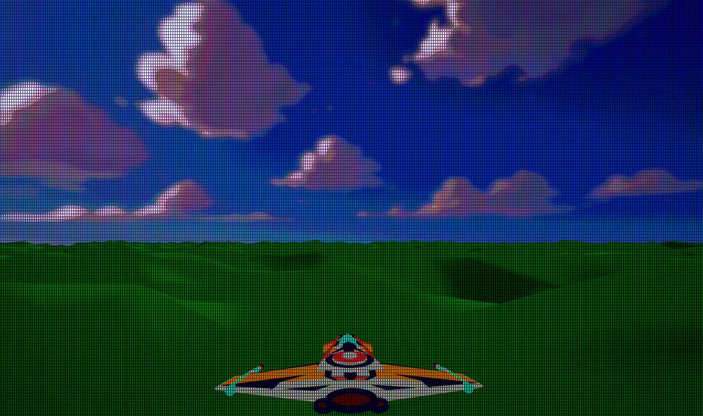
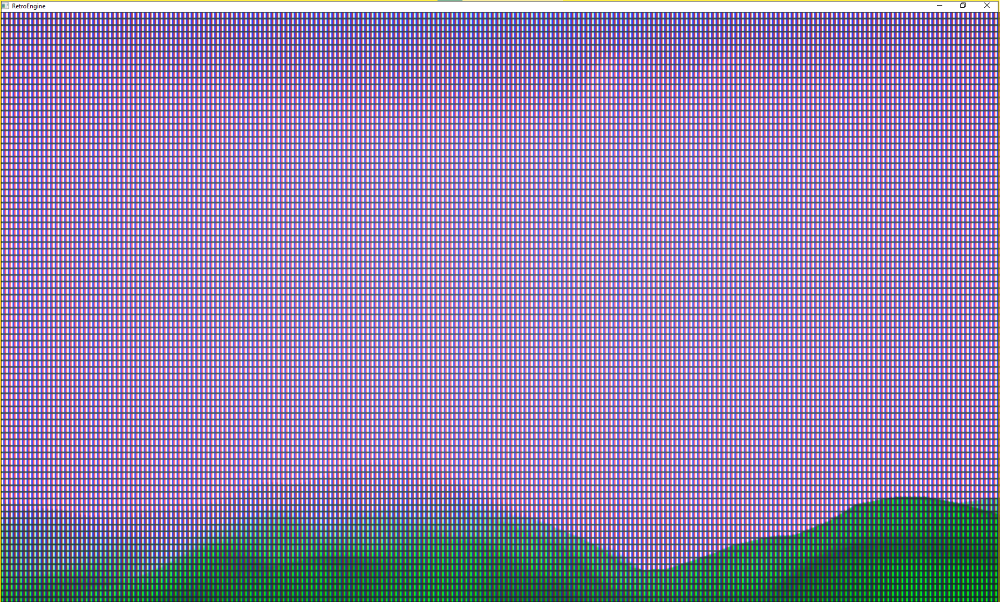
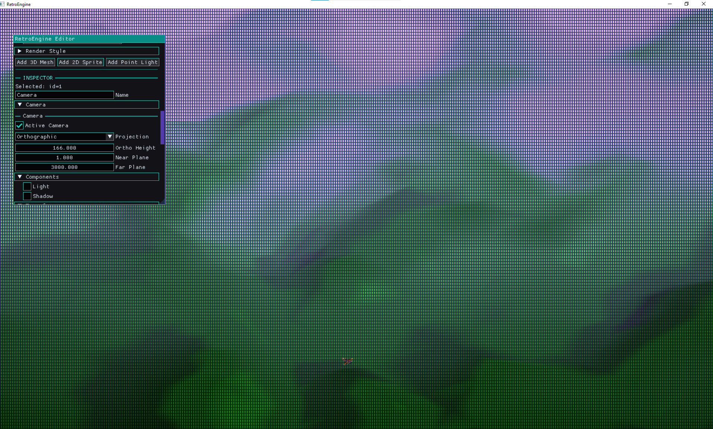
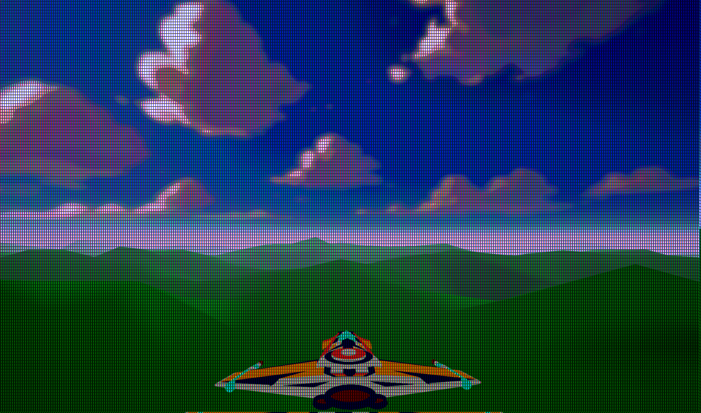

Seeing Through the Mist
Retro Game Engine is getting to the point where lighting and materials behave consistently enough that you can actually start judging the scene itself. I started doing things like streaming in terrain chunks, and suddenly I have lots of popping visble. I had been playing some older games recently that had large maps with terrain so I studyied them to see how they were handling it.
I started playing Star Wars: Rogue Squadron on the N64 and it was clear right away how they were implementing fog to both help with visual popping AND with just grounding the environment and making things feel more cohesive in general. I noticed some distance-based kind of fog at play, but also some height to it, such That the horizon was obscured. It made the world feel more immersed and seemed like something to analyze and see how my engine should handle these kinds of things. If you haven't played it in a while, it still holds up surprisingly well. The maps feel huge, you can fly around freely, and the environments somehow feel grounded despite the hardware limitations.
Reference: Rogue Squadron running on a real N64 + CRT. Notice how the fog obscures the horizon and softens terrain popping.
When I look at my game engine, even though there is a CRT simulation and noise, everything was too clean. Indoors, things feel okay, but the second I'm outside and looking at terrain, the facade falls apart.
Distance didn’t feel like distance, it was hard to really perceive how far or large something was. The world had no atmosphere to it. Lighting helped a lot, but I realized the fog was being used for building the world(s) in Rogue Squadron. Things like the opacity, falloff distance, and color all played into the mood and made things feel more unique. I needed this.

As I sat down to think about how I'd add this to my game engine, it seemed relatively simple on the surface. I've done things like build distance based fog in Unreal Engine, using things like post process and sphere masks for example. I think I understand the components, but there is probably something I'm not thinking of that will come back to bite me. If you've done graphics programming before, you probably already know what it is.
The Goal
I wanted fog that:
- is controlled per scene (not per material)
- adds depth without expensive volumetrics
- works in both perspective and orthographic cameras
- behaves the same in editor and runtime
- stays deterministic and cheap
Retro Game Eninge's rendering pipeline already ends in a CRT simulation pass, so fog needed to live before that,in the scene pipeline itself.
The CRT stage should operate on the final degraded signal. Fog is part of the world. I didn't want it to "read" like some kind of bad screen filter. I'm also constantly thinking about cost and perf, and want something cheap, intentionally so. So I'm thinking that it would run after the main geometry and sprite passes, reading from the scene color and depth buffers.
My core idea was shaping into:
fogFactor = distanceFog * heightFog finalColor = lerp(sceneColor, fogColor, fogFactor)
Distance fog is the obvious part. Things further away should fade out.
distFog = saturate((viewZ - fogStart) / (fogEnd - fogStart))
But what I really wanted was the height part. That horizon haze thing was really cool. It gave games this "the sky is eating the world" effect that I really liked.
heightFog = exp(-(worldY - baseHeight) * heightFalloff)
Multiply them together, then lerp the final scene color toward your fog color. And boom, you get something that actually makes the environment feel like it exists inside an atmosphere instead of floating in perfect clarity.
Implementation: A Fullscreen Fog Pass
I started with fog by getting it implemented as a fullscreen pass that runs after main geometry and sprite rendering.
The pass reads:
- the scene color buffer
- the depth buffer
It reconstructs world position and computes a fog factor using distance fog + height fog.
In practice you tune baseHeight like a "fog floor" and heightFalloff as density/falloff.

Bug #1: Fog Didn’t Exist in Orthographic
In perspective cameras, fog looked great.
In orthographic cameras, fog was gone. Completely.
That one ended up being frustrating to follow, but after some time I realized I was reconstructing distance assuming perspective depth. Perspective depth is non-linear. Orthographic depth is linear. So the shader was doing the right math for the wrong projection.
The fix was to explicitly branch fog depth reconstruction based on projection type:
if (projectionType == 0) // perspective
{
viewZ = (nearZ * farZ) / (farZ - depth01 * (farZ - nearZ));
}
else // orthographic
{
viewZ = lerp(nearZ, farZ, depth01);
}
Projection type is passed through the (new) fog constant buffer.
This results in fog behaving correctly in both projection modes. That was nice to finally get working, but took some time on the whiteboard first to figure out the math.

Bug #2: Fog Only Worked If a Sky Sphere Existed
This one was sneaky because initially all my tests were terrain + sky sphere.
Fog worked fine in scenes with a sky sphere great now. But in scenes without one, fog disappeared again. Like nothing at all. Which seemed really odd to me. I started wiring up some tests to get a debug view of the depth buffer.
The depth buffer was the giveaway here and it allowed me to identify the issue. If nothing draws into the background, depth stays at the clear value (1.0).
And my shader was doing this:
if (depth01 >= 0.999999)
return sceneColor;
I was treating far-plane pixels as "skip fog" which basically means: no sky geometry = no fog. Why did I do this? Because initially, I was trying to not have the distance based camera fog impact the sky when I looked up. I wanted to "skip" applying fog on top of the sky initially but now I needed it back, just not everywhere.
The correct behavior is the opposite. Far-plane pixels should be treated as maximum distance fog....but I also don't want the ENTIRE sky to be fogged out.
if (depth01 >= 0.999999)
{
depth01 = 1.0;
}
Result: fog appears even when the background is just the clear color. No sky sphere dependency.But now I needed to get
Bug #3: Constant Buffer Layout Mismatch
At one point fog started producing intermittent artifacts:
- tearing
- randomly incorrect fog falloff
- occasionally corrupted world reconstruction
This is the kind of bug that makes you question your sanity because it looks like shader math instability. It wasn't.
The CPU and GPU versions of the fog constant buffer had different layouts.
On CPU, projectionType was placed before invViewProj.
In HLSL, the shader expected it after.
So the shader was reading garbage for either the inverse matrix or projection type depending on the frame.
Fix: lock the layout. Exactly. Final order:
baseHeight heightFalloff pad2 invViewProj projectionType padProj
Result: stable world reconstruction and consistent fog behavior.

If there's one lesson here: GPU bugs that look like math are often just memory alignment pretending to be math.
Bug #4: Fog Ran Even When Fog Was Disabled
Even when fog was turned off in scene settings, the fog pass still executed every frame.
That meant:
- extra resource transitions
- a fullscreen draw call
- depth read per pixel
- unnecessary buffer work
The fix was simple: don’t do work that the scene didn’t ask for.
if (graph.fog.enabled)
{
// run fog pass
}
Fog disabled means fog pass skipped entirely. Cleaner pipeline. Less hidden cost.
Fog Is Now Saved With the Scene
Fog wasn’t useful if it didn’t serialize.
Scene save/load was extended with a scene-level fog block:
"fog":
{
"enabled": true,
"color": [0.6, 0.7, 0.9],
"start": 100,
"end": 300,
"baseHeight": 0,
"heightFalloff": 0.05
}
Load code is backward compatible with older scenes that don’t have fog data:
if (o.count("fog") && o.at("fog").IsObject())
I also flipped the default: new scenes start with fog disabled. Fog should be intentional, not accidental.
Final Fog System
The finished system now supports:
Scene-Level Controls
- fog enabled toggle
- fog color
- fog start distance
- fog end distance
- base height
- height falloff
Camera Compatibility
- perspective cameras
- orthographic cameras
- editor camera
- gameplay camera
Rendering Behavior
- fog applied after lighting
- depth-based distance fog
- world-space height fog
- stable reconstruction
- sky-independent fog
Performance
- one fullscreen triangle
- one depth read per pixel
- skipped entirely when fog is disabled
Why I Like This Upgrade
Fog is one of those features that doesn’t feel like a big technical flex, but it changes how everything reads.
It adds scale. It adds atmosphere. It lets you hide harsh edges and pull the player’s eye where you want it.
And the best part is it stays aligned with what Retro Game Engine is trying to be: a retro-inspired renderer that behaves like a real pipeline, not a stack of filters.
Fog now lives where it should: inside the scene render stage, before the CRT simulation.
Now
Scenes can finally have mood.
The fog system is stable, works in both ortho and perspective cameras, doesn't have any limitations on things like the sky geometry, saves with the scene and is super cheap. So I'm happy.
Next up I turn towards more editor-heavy tasks: viewport interaction/selection, placement and pivots. Because apparently I enjoy debugging coordinate systems now. The engine is starting to roar to life, I'm excited.